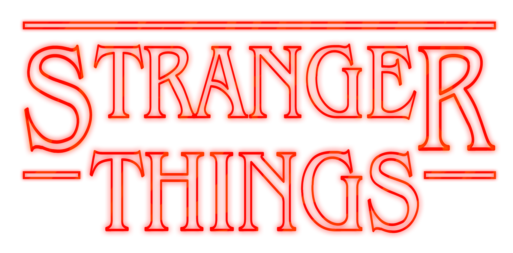

Stranger Things é um seriado americano criado e dirigido pelos irmãos Matt e Ross Duffer e produzida por Shawn Levy , que teve sua primeira temporada estreada em 2016 na plataforma Netflix.
Atualmente a série conta com 4 temporadas de muitas reviravoltas e emoções. O volume 1 da última temporada foi lançado no dia 27 de maio desse ano, deixando os fãs mais ansiosos ainda pela chegada do volume 2 em 1 de julho.